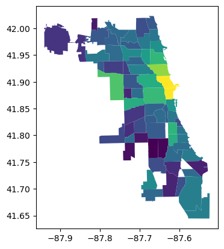
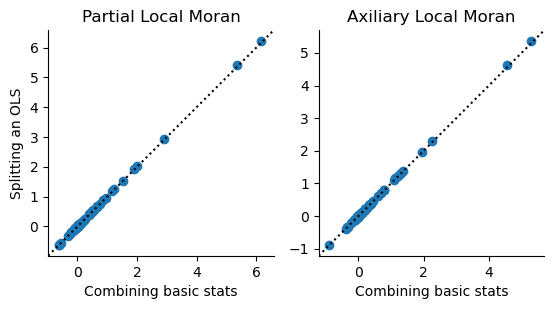
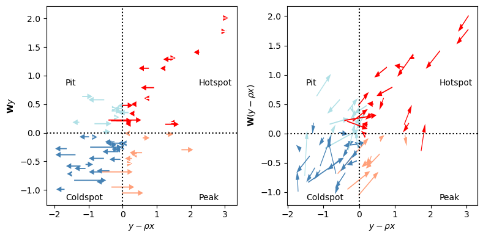
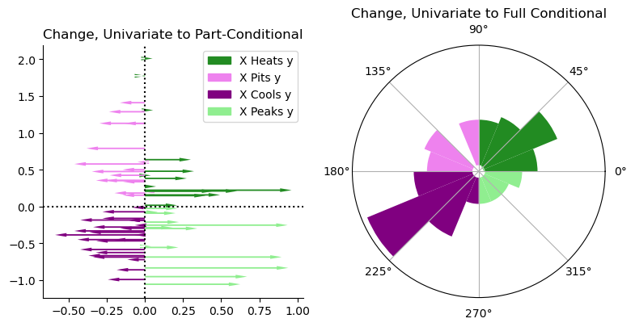

This page was generated from build/.jupyter_cache/executed/c64a1aa3d3176b0cbec3b0ac31f41dc4/base.ipynb.
Interactive online version:

[1]:
from esda.moran_local_mv import MoranLocalPartial, MoranLocalConditional
from esda.moran import Moran_Local, Moran_Local_BV # standard Moran
from libpysal import graph # construct spatial relations
from scipy.stats import pearsonr # calculate correlation
import geopandas, geodatasets # work with spatial data
from matplotlib import pyplot as plt # visualize
import seaborn # further visualization tools
import numpy # math tools
[2]:
df = geopandas.read_file(
geodatasets.get_path("geoda.airbnb")
).dropna()
[3]:
df.plot("price_pp")
[3]:
<Axes: >

[4]:
y = df.price_pp.values.reshape(-1,1)
x = df.crowded.values.reshape(-1,1)
w = graph.Graph.build_contiguity(df).transform("R")
[5]:
# are expensive places near expensive places?
Iy = Moran_Local(y, w)
# are crowded plcaes near crowded places?
Ix = Moran_Local(x, w)
# are expensive places also crowded places?
rho = pearsonr(y.squeeze(),x.squeeze())[0]
# are expensive places near crowded places?
Ixy = Moran_Local_BV(x, y, w)
# are crowded places near expensive places?
Iyx = Moran_Local_BV(y, x, w)
# are expensive places near expensive places, adjusted for crowding?
p_lmo = MoranLocalPartial().fit(x,y,w)
# assuming crowding explains price,
# are places with high post-crowding premiums near one another?
a_lmo = MoranLocalConditional().fit(x,y,w)
# this is a scaling factor for the multivariable statistics
scaling = (w.n - 1)/(w.n) * (1/(1-rho**2))
[6]:
f,ax = plt.subplots(1,2, subplot_kw=dict(aspect='equal'))
ax[0].scatter(
(Iy.Is - rho * Ixy.Is)*scaling,
p_lmo.association_
)
ax[1].scatter(
(Iy.Is - rho*Ixy.Is - rho*Iyx.Is + rho**2*Ix.Is)*scaling,
a_lmo.association_)
for i in range(2):
xmin, xmax = ax[i].get_xlim()
ymin, ymax = ax[i].get_ylim()
left = min([xmin, ymin])
right = max([xmax, ymax])
ax[i].plot([left, right], [left, right], color='k', linestyle=":")
ax[i].set_xlim(left, right)
ax[i].set_ylim(left, right)
if i==0:
ax[i].set_ylabel("Splitting an OLS")
ax[i].set_xlabel("Combining basic stats")
ax[i].set_title(['Partial Local Moran', 'Axiliary Local Moran'][i])
seaborn.despine(ax=ax[i])

[7]:
#| echo: false
def quadcolor(x,y, colors=None):
off_sign = numpy.sign(y) != numpy.sign(x)
neg_y = y < 0
quad = off_sign + neg_y*2
if colors is None:
colors= numpy.array(['red','powderblue','steelblue','lightsalmon'])
return colors[quad]
[8]:
#| echo: false
f,ax = plt.subplots(1,2,figsize=(8,4))
for i,ax_ in enumerate(ax):
start_x, start_y = Iy.z, Iy.w.sparse @ Iy.z
new_x, new_y = (p_lmo.partials_.T, a_lmo.partials_.T)[i]
dx, dy = new_x - start_x, new_y - start_y
colors = quadcolor(new_x, new_y)
for j in range(Iy.w.n):
ax_.arrow(
x=start_x[j], y=start_y[j],
dx = dx[j], dy = dy[j],
width=.02, shape='full',
length_includes_head=True, linewidth=0,
head_width=.1, color=colors[j]
)
ax_.axvline(0, color='k', linestyle=':')
ax_.axhline(0, color='k', linestyle=':')
for j in range(2):
for k in range(2):
ax_.annotate(
text=['Hotspot', 'Pit', 'Peak', 'Coldspot'][j+2*k],
xy=(.1 if j else .8,
.025 if k else .6
),
xycoords="axes fraction"
)
ax_.set_xlabel(r"$y-\rho x$")
ax_.set_ylabel((r"$\mathbf{W}y$", r"$\mathbf{W}(y-\rho x)$")[i])
f.tight_layout()
plt.show()

[9]:
#| echo: false
def circular_hist(ax, x, bins=16, density=True, offset=0, gaps=True):
"""
Produce a circular histogram of angles on ax.
Parameters
----------
ax : matplotlib.axes._subplots.PolarAxesSubplot
axis instance created with subplot_kw=dict(projection='polar').
x : array
Angles to plot, expected in units of radians.
bins : int, optional
Defines the number of equal-width bins in the range. The default is 16.
density : bool, optional
If True plot frequency proportional to area. If False plot frequency
proportional to radius. The default is True.
offset : float, optional
Sets the offset for the location of the 0 direction in units of
radians. The default is 0.
gaps : bool, optional
Whether to allow gaps between bins. When gaps = False the bins are
forced to partition the entire [-pi, pi] range. The default is True.
Returns
-------
n : array or list of arrays
The number of values in each bin.
bins : array
The edges of the bins.
patches : `.BarContainer` or list of a single `.Polygon`
Container of individual artists used to create the histogram
or list of such containers if there are multiple input datasets.
"""
np = numpy
# Wrap angles to [-pi, pi)
x = (x+np.pi) % (2*np.pi) - np.pi
# Force bins to partition entire circle
if not gaps:
bins = np.linspace(-np.pi, np.pi, num=bins+1)
# Bin data and record counts
n, bins = np.histogram(x, bins=bins)
# Compute width of each bin
widths = np.diff(bins)
# By default plot frequency proportional to area
if density:
# Area to assign each bin
area = n / x.size
# Calculate corresponding bin radius
radius = (area/np.pi) ** .5
# Otherwise plot frequency proportional to radius
else:
radius = n
# Plot data on ax
patches = ax.bar(bins[:-1], radius, zorder=1,
align='edge', width=widths, linewidth=1
)
# Set the direction of the zero angle
ax.set_theta_offset(offset)
# Remove ylabels for area plots (they are mostly obstructive)
if density:
ax.set_yticks([])
return n, bins, patches
[10]:
#| echo: false
f = plt.figure(figsize=(8,4))
ax1 = plt.subplot(1,2,1)
ax2 = plt.subplot(1,2,2, projection='polar')
for i,ax_ in enumerate((ax1, ax2)):
start_x, start_y = Iy.z, Iy.w.sparse @ Iy.z
new_x, new_y = (p_lmo.partials_.T, a_lmo.partials_.T)[i]
dx, dy = new_x - start_x, new_y - start_y
colors = quadcolor(dx, dy if i > 0 else new_y,
colors=numpy.array(
["forestgreen",
"violet",
"purple",
"lightgreen"
]
)
)
if i == 0:
for j in range(Iy.w.n):
ax_.arrow(
x=0, y=0 if i > 0 else start_y[j],
dx = dx[j], dy = dy[j],
width=.02, shape='full',
length_includes_head=True, linewidth=0,
head_width=.05, color=colors[j]
)
ax_.axvline(0, color='k', linestyle=':')
ax_.axhline(0, color='k', linestyle=':')
ax1.set_title("Change, Univariate to Part-Conditional")
seaborn.despine(ax=ax1)
ax1.legend(
handles =
[
plt.arrow(0,0,1,0,
color=["forestgreen", "violet", "purple", "lightgreen"][i]) for i in range(4)
],
labels = [
"X Heats y",
"X Pits y",
"X Cools y",
"X Peaks y"
]
)
else:
theta = numpy.arctan2(dy, dx)
n, bins, patches = circular_hist(ax=ax2, x=theta, bins=16, gaps=False)
for bin_, patch_ in zip(bins,patches.patches):
if -numpy.pi/2 <= bin_ < 0:
patch_.set_facecolor("lightgreen")
elif 0 <= bin_ < numpy.pi/2:
patch_.set_facecolor("forestgreen")
elif numpy.pi/2 <= bin_ < numpy.pi:
patch_.set_facecolor("violet")
elif -numpy.pi <= bin_ < -numpy.pi/2:
patch_.set_facecolor("purple")
ax2.set_title("Change, Univariate to Full Conditional")
f.tight_layout()
plt.show()

[11]:
#| echo: false
#| #| jupyter: {source_hidden: false}
import pandas
partial_moves = pandas.crosstab(
Iy.q,
p_lmo.labels_,
)
partial_moves.columns = partial_moves.index = ['hotspot', 'pit', 'coldspot', 'peak']
partial_moves.columns.name = "Partial"
partial_moves.index.name = "Univariate"
aux_moves = pandas.crosstab(
Iy.q,
a_lmo.labels_,
)
aux_moves.columns = aux_moves.index = ['hotspot', 'pit', 'coldspot', 'peak']
aux_moves.columns.name = "Auxiliary"
aux_moves.index.name = "Univariate"
[12]:
#| echo: false
partial_moves
[12]:
| Partial | hotspot | pit | coldspot | peak |
|---|---|---|---|---|
| Univariate | ||||
| hotspot | 14 | 3 | 0 | 0 |
| pit | 4 | 9 | 0 | 0 |
| coldspot | 0 | 0 | 24 | 3 |
| peak | 0 | 0 | 1 | 8 |
[13]:
#| echo: false
aux_moves
[13]:
| Auxiliary | hotspot | pit | coldspot | peak |
|---|---|---|---|---|
| Univariate | ||||
| hotspot | 14 | 3 | 0 | 0 |
| pit | 4 | 7 | 2 | 0 |
| coldspot | 0 | 5 | 19 | 3 |
| peak | 2 | 0 | 1 | 6 |
[ ]: